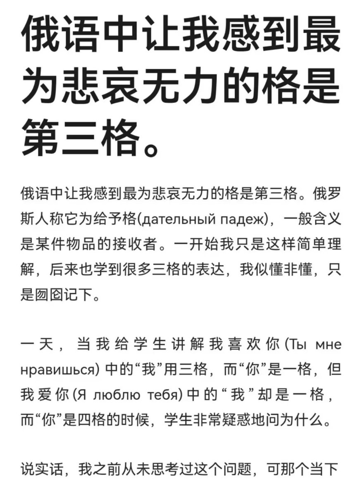
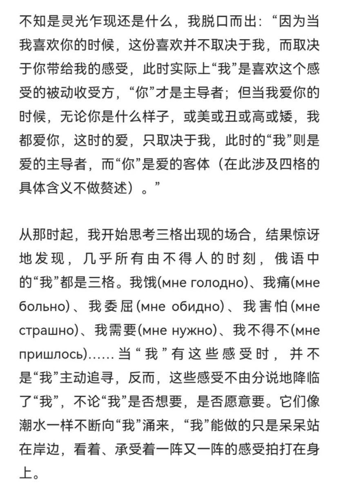
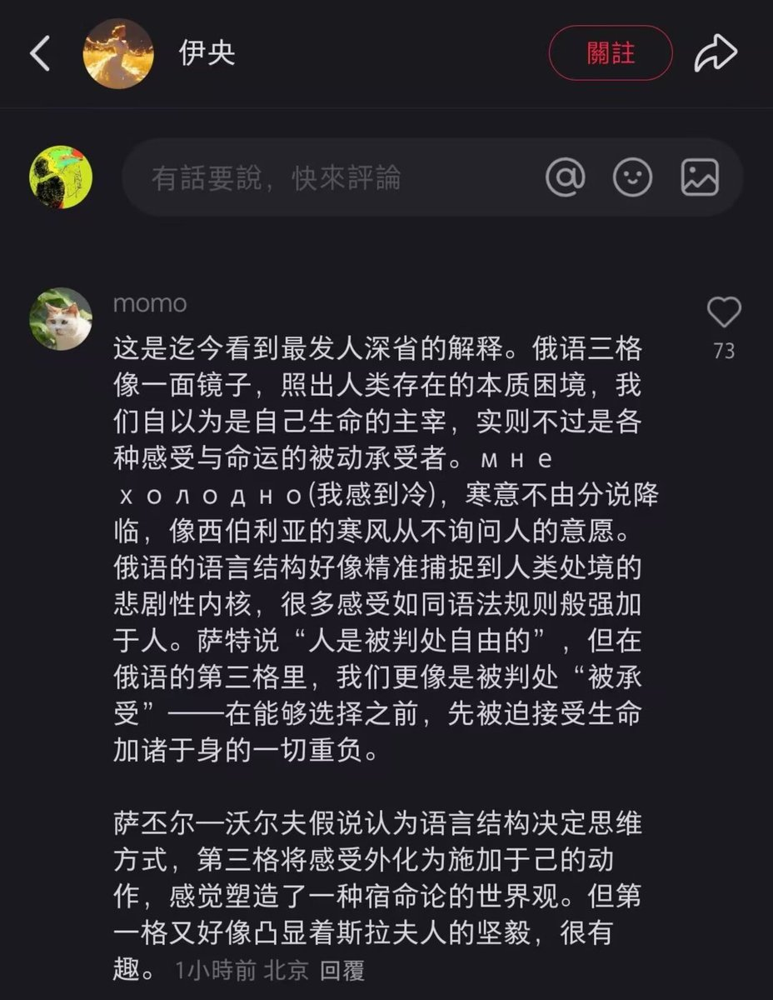

𝑳𝒂
@IXXA00
人类的宿命感，其实早就藏在语法里了。
那些真正由不得人的时刻——寒冷、疼痛、孤独、…和不由自主的喜欢，原来都是外界强加给我们的‘承受’。
你是我无法控制的欢喜，而我是被动接受的受难者，正如我们无法控制命运降临的苦难折磨，我们也无法控制某些纠葛感情的滋生。
但好在，人类最伟大的地方在于，即使只能被动承受生命的重负，也依然拥有选择如何去爱（主格）、如何活下去的主动与尊严。
万事皆由不得我，但唯有心是自由。


